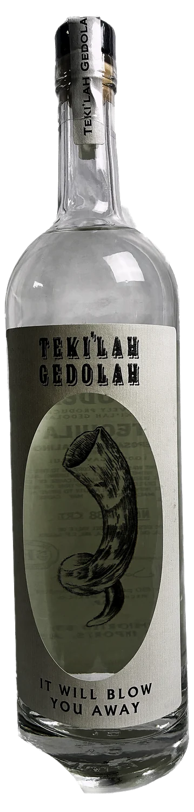
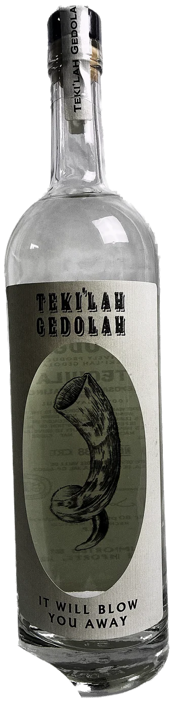
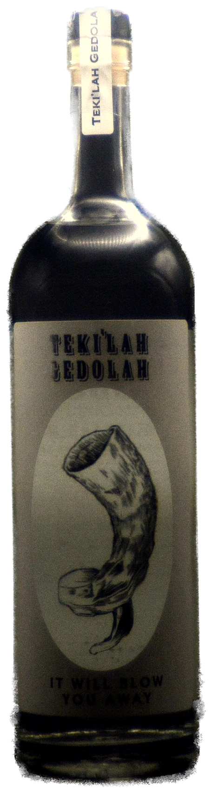
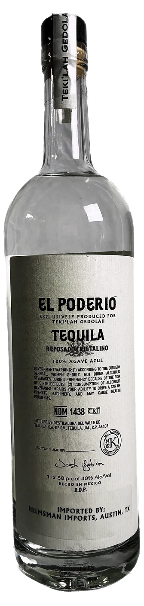

Our Story
The name is
The name is
the whole joke
Teki'ah gedolah — תקיעה גדולה — is the last blast of the shofar: one note, held as long as the breath lasts, the sound the whole service has been building toward. Say it out loud and you'll hear the other word hiding in it.
So the ram's horn goes on the label, the blessing goes on the box, and the line underneath writes itself: it will blow you away.
Behind the joke is a serious bottle. Teki'ah Gedolah is produced under the El Poderío mark in Tequila, Jalisco, distilled from 100% blue agave, rested in oak and then filtered clear — a cristalino that keeps the rested character and loses the colour. Kosher certified, bottled at 80 proof, each bottle numbered and signed by hand.
- 100%Agave Azul
- 40%Alc./Vol · 80 proof
- 1 LBottle size
- 1438NOM · CRT certified